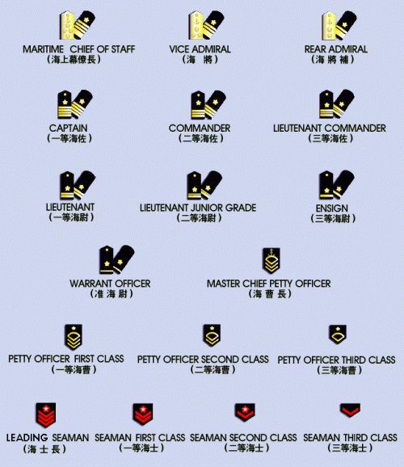

JAPAN
Capital : New TokyoPopulation : 142,449,703
Literacy : 99.9%
Currency : Yen (¥)
Climate : Varies from tropical in south to cool temperate in north.
Maritime claims : 12 nm; 3 nm in the international straits - La Perouse or Soya, Tsugaru, Osumi, and Eastern and Western Channels of the Korea or Tsushima Strait.
Defense branches : Japan Ground Self-Defense Force (Army), Japan Maritime Self-Defense Force (Navy), Japan Air Self-Defense Force (Air Force).
Landscape
Mountains dominate Japan's landscape, covering 75 to 80 percent of the country. Japan is a major economic power, and average income levels and standards of living are among the highest in the world. The country's successful economy is based on the export of high-quality consumer goods developed with the latest technologies.
Economy
Government-industry cooperation, a strong work ethic, mastery of high technology, and a comparatively small defense allocation (roughly 1% of GDP) have helped Japan advance with extraordinary rapidity to the rank of the most powerful economy in the world. One notable characteristic of the economy is the working together of manufacturers, suppliers, and distributors in closely-knit groups called keiretsu. Industry, the most important sector of the economy, is heavily dependent on imported raw materials and fuels. The much smaller agricultural sector is highly subsidized and protected, with crop yields among the highest in the world. Usually self-sufficient in rice, Japan must import about 70% of its requirements of other grain and fodder crops. Japan maintains one of the world's largest fishing fleets and accounts for nearly 25% of the global catch. The crowding of the habitable land area has been Japan's major long-run problem.

Government
Japan's governmental system in 2029 is heavily influenced by the English Parliamentary system. It is divided into three branches, the bicameral Diet (legislative), the Judicial and the Administrative. The public elects the members of the Diet, who then elect a Prime Minister. The Prime Minister then appoints the heads of the Ministries.
Important Ministries
Ministry of Agriculture, Forestry and Fisheries : The Ministry undertakes administration related to agricultural, forestry and fisheries products, covering from production to consumption and also to rural development and promotion of the welfare of rural inhabitants.
Ministry of Education : The MOE controls the education system, schools and payrolls of all teachers. They also operate special education facilities including ones dealing with Cyberbrain Closed Shell Syndrome.
Ministry of the Environment : MOTE regulated the air quality and ensures corporations follow state directed regulations for waste disposal. MOTE employs many different breeds of MicroMachines, sold to them various companies, to accomplish certain tasks. Certain MicroMachines, for example, can devour pollution. The Ministry informs the public of their use and operates the machine for dispersal and cleanup. The Ministry also operated the Japanese miracle, which removed the radiation from the destroyed Tokyo.
Ministry of Finance : The Ministry of Finance attempts to maintain a stable, yet dynamic economy and a peaceful and prosperous society by managing the overall national finances through efficient and transparent administration in the interests of the people as taxpayers and promote the sustainable growth of the world economy.
The Ministry of Finance controls the budgets of most other organizations including other Ministries. The deadline every year is the end of August. After compiling a full report of the requesting budgets, the Ministry of Finance presents the final draft to the Cabinet, and the Cabinet presents it to the diet. The budget for Section 9 is part of a secret "blank fund"...
Ministry of Foreign Affairs : Also known as MOFA, this ministry is responsible for all matters of international diplomacy. They handle Foreign affairs work. They deal with international trade, policy, economic assistance and treaties. Public Security Section 6 works under them and often clashes with members from Section 9, under Internal Affairs. Organization and functions follow :
-Minister's Secretariat : the Minister's Secretariat takes charge of overall coordination and administration under the Ministry.
-Public Diplomacy Department : the Public Diplomacy Department takes charge of implementation of international agreements to promote cultural exchange, cooperation with international cultural organizations and the introduction of Japanese culture abroad.
-Global Issues Department : takes charge of the Global issues policy, United Nations administration, human rights and refugee-related matters.
-Foreign Policy Bureau : takes charge of the planning of basic and middle- or long-term foreign policy.
-Disarmament, Non-proliferation and Science Department : takes charge of arms control and disarmament, non-proliferation, nuclear energy, and, science cooperation and other scientific affairs.
-Asian and Oceanian Affairs Bureau : takes charge of planning work connected with the formulation of policies concerning Asian and Oceanian countries.
-North American Affairs Bureau : takes charge of planning work connected with the formulation of policies concerning the North American countries.
-European Affairs Bureau : takes charge of planning work connected with the formulation of policies concerning the European countries.
-Middle Eastern and African Affairs Bureau : takes charge of planning work connected with the formulation of policies concerning Middle Eastern and African countries.
-Economic Affairs Bureau : takes charge of protection and promotion of Japan's interests relating to foreign commerce and navigation.
-Economic Cooperation Bureau : takes charge of matters concerning treaties and international agreements on economic cooperation.
-International Legal Affairs Bureau : takes charge of the conclusion of treaties and other international agreements and matters of international law and legal matters concerning foreign relations.
-Consular Affairs Bureau : takes charge of protecting Japanese nationals and their property abroad (except matters dealt with by other bureaus), issues passports and other documents necessary for travel abroad, and plans and handles emigration affairs.
-Intelligence and Analysis Service : the Intelligence and Analysis Service takes charge of the following matters : general management of information on the international situation; general administration of research affairs; research and surveys on foreign countries (except matters under the charge of other bureaus), and; general analysis of the international situation and collection of necessary information.
Ministry of Foreign Aid : Not to be confused with MOFA, the Foreign Aid Ministry is often referred to as ODA, or "Official Development Assistance". This is an agency the government has the most problems with as the current view of the other Ministries are to deal with internal problems first. The prime concern from the other Ministries, especially MOFA, is how the funds ODA uses to aid other countries are misappropriated by that country, often enough, against the knowledge of the ODA AND the country being aided. A good example of this involved recent actions with the Gavel Republic.
Ministry of Health and Welfare : This Ministry regulates drug and the import/export of medicine in Japan. They approve of all drugs to be sold in Japan and regulate their pricing. They also coordinate patents with medical companies. The Ministry controls the how these companies sell their product and how it can be marketed in Japan, if at all. Their departments include : the Statistics and Information Department, the Health Policy Bureau, the Health Service Bureau, the Department of National Hospital/Pharmaceutical and Food Safety Bureau, the Department of Food Safety, the Labor Standards Bureau, the Industrial Safety and Health Department, the Workers' Compensation Department, the Workers' Life Department, the Employment Security Bureau, the Department of Employment Measures for the Elderly and Persons with Disabilities, the Human Resources Development Bureau, the Equal Employment/Children and Families Bureau, the Social Welfare and War Victims' Relief Bureau, the Department of Health and Welfare for Persons with Disabilities, the Health and Welfare Bureau for the Elderly, the Health Insurance Bureau, the Pension Bureau, the Director-General for Policy Planning and Evaluation, the Social Insurance Agency, the Central Labor Relations Commission and the Affiliated institutions/regional Bureau.
The Ministry was recently clouded with controversy when it was revealed that they intentional held back the Murai vaccine in treatment in favor of the less effective MicroMachine treatment. The then General of the Ministry used the Murai vaccine as blackmail for the MicroMachine companies, successfully acquiring a massive amount of money. This was a root cause and effect of the Laughing Man case.
Ministry of Internal Affairs : National affairs including public works and police fall under MIC. The Ministry of Internal Affairs was initially responsible for creating the fundamental national systems of Japan. These systems include the national administrative organizations, the public service personnel system, local tax/finance, the election system, fire/disaster prevention, information and communications, postal services, and statistical systems. The MIC is committed to building a safe and convenient society for all while achieving efficient administration at the same time.
They operate Public Security section 9, a division that does not officially exist. The Ministry of Internal Affairs is run by the Minister with the Senior Vice-Minister under him. Other ranks of authority include the Parliamentary Secretary for Internal Affairs, the Vice-Minister and the Vice-Minister for Policy Coordination as well as the Secretary to the Minister.
Ministry of Justice : They deal with judicial affairs, including the courts (which are not a jury system). The Ministry of Justice is in charge of a broad area of legal affairs, which include civil, criminal, immigration and other matters. In particular, it takes charge of nationality, family registration and registration of real estate, prosecution of criminal cases, correction and rehabilitation of offenders, litigations involving the interests of the State, immigration control and registration of foreign residents, and the protection of the rights of citizens in general. Thus, the Ministry of Justice is primarily responsible for maintaining the legal order of the country in which the rule of law is ensured.
Ministry of Land and Transport : MOLT operates a massive protected network almost as guarded as the defense network. More than just building roads, MOLT governs their regulations. They employee all road workers but also regulate the traffic system itself. All streetlights and stoplights are computer controlled from central hubs which all communicate. The entire rail network also falls under their care. MOLT also controls the massive camera network on every road. This system proves very useful for locating accidents and for assisting the various law enforcement agencies.
Ministry of National Defense : The MND is responsible for defense matters involving the SDF. The JSDF are explained in detail later.
Ministry of Telecommunications : They monitor and control the flow of information in Japan. They maintain the public network and enforce the laws governing it. This expanded in the last few decades to all cyberbrain communication. They often must employ the help of Public Security to fight off against the increasing amount of Cyber crime. Anything that could disrupt the communications network falls under their jurisdiction.
Public Security Bureau
The Public Security Bureau is a national police force used by the Ministries. It is almost military in nature and often engages in espionage and special operations. There are nine distinct sections, each of which answers to one Ministry or another.
Section 1 : The Special Service Squad of Police Headquarters' Investigations, Section 1 is operated and occupied by Law Enforcement. Togusa was transferred from Section 1 to Section 9. Section 1 operates from Police Headquarters and is known to be populated with some of the best criminal investigators in Japan. They have jurisdiction to all criminal cases in Japan but can have special cases removed from their power by other sections, especially when dealing with cyber crime and terrorism.
Section 2 : Section 2 is controlled by the Ministry of Health and Welfare. Originally, they only worked alongside Section 1 for drug enforcement. This later deviated and the two sections operate independently. Where Section 1 pursues the illegal selling and use of prohibited medicine, Section 2 tackles the larger organizations attempting to bypass the Ministry's power on the Drug Evaluation Committee. The Ministry makes sure that no un-authorized experiments take place and that no new patents are filed without prior knowledge of the Ministry. Being MicroMachine advocates translates that Section 2 attempts to prevent other alternate forms of treatment from being developed.
Section 3 : Section 3 is in charge of drug enforcement, and is similar in scope to the US' DEA. Section Three utilizes combat trained personnel and investigates personnel in its operations. Since all agents are cross-trained, they can engage in either activity. Section 3 answers to the Ministry of Internal Affairs.
Section 4 : The "Rangers", as they are also known, constitute the commando force of Public Security. More modeled after the British force than the American one, the Section 4 Rangers are small, lightly armed and armored, elite troops usually air-dropped into a hostile situation to deal with. The Rangers are not meant to be used as standard infantry and are not affiliated with the JSDF. Rangers, initially, were amphibious raiders, sent ashore in small groups to hit an enemy installation and then depart as they had arrived, by sea. Eventually, this evolved to include air interdiction as well. Their missions involved moving in fast and light, never being bogged down with heavy weapons. Rangers only take what they need to succeed on a mission, often only taking small arms and machine guns. The practice of using full-cyborgs became popular because of the impact a single cyborg could have in a combat situation. Because Rangers would move in and out quickly, the need to operate long times between servicing would not be an issue. They also often operated with therm-optic camouflage. Bateau was transferred to Section 9 from Section 4.
Section 5 : Unknown.
Section 6 : Section 6 contains all investigations, combat and special operations personnel used by The Ministry of Foreign Affairs. This section is highly secretive and is deeply rooted in espionage and covert operations. Comparative to the US' CIA or the British MI-6. There are no (official) full-cyborgs in S-6. Section 6 answers directly to the Minister of Foreign Affairs. Section 6 deals with jurisdiction issues outside the country's borders.
Section 7 : Unknown.
Section 8 : Unknown.
Section 9 : Section 9 (aka : Koukaku Kidoutai) is the Ministry of Internal Affairs counter-terrorist, cyborg crimes, and assassination squad. Section 9 is a paramilitary organization, and most of its members are full cyborgs. It is no coincidence that Section 9 resembles the German GSG9 (without a doubt, the most extensively trained and equipped counter-terrorist squad on the planet), and like each GSG9 agent, each S-9 member is extensively trained in combat, anti-terrorism and investigations. When a terrorist incident occurs it is S-9's job to either stop it, or investigate the aftermath and find those responsible.
Public Peace Section Nine is an elite domestic anticrime unit tasked with preemptive and aggressive prevention of crime. Their duties include response to serious cyberbrain crimes, protection of foreign national VIPs within Japanese borders, investigation of wrongdoings of those in public office, investigation of high profile murder cases and top secret assassinations. They are called out to deal with those situation and crimes that the national police cannot. This unit is cleverly headed by Daisuke Aramaki while tactical command is the responsibility of the very talented Motoko Kusanagi.
Recruitment for S-9 is mostly done from the special forces of the GSDF. Typically the most talented full cyborgs with tactical and investigations training are offered positions in Section 9. Occasionally S-9 will recruit from the police, which is where Togusa came from. Section 9 is less than 6 years old. The payroll of Section 9 is done through a dummy security company, to which technically, everyone involved, except for Aramaki, is employed. S-9 has access to a wide range of equipment. They are allowed to carry their choice of sidearm and a variety of SMGs and assault rifles are provided for them. S-9 also employs the use of therm-optic camouflage (as does S-6 of the PSB and S-4 of the Rangers) and has access to Tachikomas and later, Fuchikomas.

Functions of the Public Security Bureau
Their relative functions include :
1. Implementing the guidelines and policies of police work and drafting out related local regulations and organizing carrying out the police and safeguard work of the city.
2. Mastering the situations which threaten the stability of policies and the domestic safety and the social public security, and working out related measures and carrying them out.
3. Preventing, forbidding and detecting crimes and dealing with accidents and turbulence. Supervising special industries and dangerous goods.
4. Maintaining traffic safety and traffic orders, and coping with traffic accidents.
5. Organizing carrying out and supervising fire prevention.
6. Undertaking safeguarding the Party and top leaders of Japan and important foreign guests.
7. Supervising residence policies, nationality, affairs on entry and exit of aliens and related affairs of aliens' staying and traveling in Japan according to law.
8. Executing penalties to the criminals sentenced to be controlled or taken into custody or being deprived of political rights and to the criminals to be punished out of prisons. Supervising and examining the criminals placed on probation or released on probation. Administrating jails, hoosegows, compelling drug quitting hospital, accepting and educating office, etc according to law.
9. Supervising and guarding the public information network.
10. Directing and supervising the securities of national departments, social communities, enterprises and key construction projects. Directing the security keeping work of security keeping committees and other folk organs.
11. Presiding over educating penitentiary people and laboring according to law.
12. Carrying out police scientific and technological work and taking charge of the construction of police information technology, criminal technology and action technology.
13. Taking charge of securing the installation and sufficient funds of police equipments for departments directly under the control of municipal public security bureau. Directing the equipments and financial affairs of police branch offices.
14. Working out and implementing the regulations and policies of managing the whole police. Organizing educating, training and publicizing the whole public security bureau. Supervising leaders and police ranks according to their power purviews. Carrying out police supervision and handling illegal cases of Dalian police.
15. Leading Japanese fire prevention and safeguard police, and leading and directing army troops to carry out police tasks and related affairs.
16. Undertaking affairs handed over by the municipal committee, the municipal government and the police department.
Japanese Selfdefense Force
Nearly 240,000 strong, Japan's military excels Britain's in spending and manpower although they are prohibited to possessing nuclear weapons. A prohibition on war is supported by the Japanese government themselves and declared in their own constitution. They are also not allowed to be deployed outside of Japan... at least in original theory. After World War III, the SDF did expand their reach to beyond their borders. The only real exercise of this new muscle occurred when the SDF was used in ground operations across the sea in World War IV.
The Defense Agency and the SDF is basically the same thing. However, the term Defense Agency refers to the administrative organization responsible for management, while the SDF is used to mean the actually military arm that conduct activities for the defense of the nation. The SDF fall under control of the civilian Defense Agency, subordinate to the prime minister. Unlike the Ministry of Foreign Affair, JDA is not a full-fledged ministry. Rather, it is an agency, a part of the Prime Minister's Office. Not only is it of lower bureaucratic standing, therefore, but also it has less control over its own fate than do full ministries. Thus, of the 10 bureaucratic appointments to JDA, at least four are assigned from other ministries. This situation is the result of a deliberate effort to ensure continued civilian control.
The overall organization is called the Defense Agency rather than the Ministry of Defense. The armed forces were designated the Ground Self-Defense Force (GSDF), the Maritime Self-Defense Force (MSDF), and the Air Self-Defense Force (ASDF). All SDF personnel are technically civilians : those in uniform are classified as special civil servants and are subordinate to the ordinary civil servants who run the Defense Agency. There is no military law, and offenses committed by military personnel- -whether on base or off base, on duty or off duty, of military or nonmilitary nature--are all adjudicated under normal procedures by civil courts in appropriate jurisdictions.
According to the original basic policy for defense in 1957, the nation's security would be achieved by supporting the United Nations (UN) and promoting international cooperation. Japan's national defense policy had been based on maintaining the 1960 Treaty of Mutual Cooperation and Security with the United States, under which Japan assumed unilateral responsibility for its own internal security and the United States agreed to join in Japan's defense in the event that Japan or its territories were attacked. Government policy held that the SDF would be developed only to repel a small-scale, limited invasion and that the nation would depend on the United States to come to its aid in the event of a more serious incursion. Against a nuclear threat, Japan would also depend on the deterrence of America's nuclear arsenal.
This all collapsed after World War III when the United States broke in two and could no longer maintain that defense. The destruction of Tokyo via nuclear device more than finalized this deal's breakdown. However, Japan was able to show strength in its own non-aggressive deterrence. The Japanese Miracle (micromachines designed to remove radiation form effective areas) helped starve off the fear of nuclear attack, reducing the need for an American Nuclear shield. The UN still maintains its cooperation with Japan but the SDF did expand their charter to increase their military's power. This allowed Japan to being the power it is today. The SDF still did no operations outside their own borders unless in cooperation with the UN. This occurred in both World War III and World War IV, the last with some heavy controversy, as the SDF's involvement in the Peninsula was more complicated and detrimental.
The GSDF defends against ground invasion and threats to internal security, be able to deploy to any part of the nation, and protect the bases of all three services of the Self-Defense Forces. The MSDF meets invasion by sea, sweeps mines, patrol and survey the surrounding waters, and guard and defend coastal waters, ports, bays, and major straits. The ASDF renders aircraft and missile interceptor capability, provide support fighter units for maritime and ground operations, supply air reconnaissance and air transport for all forces, and maintain airborne and stationary early warning units.
The Defense Agency, as part of the Office of the Prime Minister, is required by Article 66 of the constitution to be completely subordinate to civilian authority. Its head, the director general, has the rank of minister of state. He is assisted by two vice directors general (vice ministers), one parliamentary and one administrative; the Defense Facilities Administration Agency; and the internal bureaus. The highest figure in the command structure is the prime minister, who is responsible directly to the Diet. In a national emergency, the prime minister is authorized to order the various components of the SDF into action, subject to the consent of the Diet. In times of extreme emergency, that approval might be obtained after the fact.
The internal bureaus, especially the Bureau of Defense Policy, Bureau of Finance, and the Bureau of Equipment, are often headed by officials from other ministries and are the main centers of power and instruments of civilian control in the Defense Agency. The Bureau of Defense Policy is responsible for drafting defense policy and programs, for determining day-to-day operational activities, and for information gathering and analysis in the SDF. The Bureau of Finance is instrumental in developing the Defense Agency budget and in establishing spending priorities for the Defense Agency and the SDF. The Bureau of Equipment, organized into subunits for each of the military services, focuses on equipment procurement. Before any major purchase is recommended to the Diet by the Defense Agency, it has to be reviewed by each of these bureaus.
Below these civilian groups is the uniformed SDF. Its senior officer is the chairman of the Joint Staff Council, a body that included the chiefs of staff of the ground, maritime, and air arms of the Self-Defense Forces. Its principal functions are to advise the director general and to plan and execute joint exercises. The three branches maintain staff offices to manage operations in their branches. Although rank establishes echelons of command within the SDF, all three branches are immediately responsible to the director general and are coequal bodies with the Joint Staff Council and the three staff offices.
The Defense Agency's main office houses nearly 7,000 agency personnel with eight organizations. The complex has five wings :
A-Wing is the home of the military's central nervous system, hosting the Joint Staff Council and the Staff Offices for each of the three branches of the Self-Defense Forces (SDF) : Ground, Maritime and Air. The wing has 23 floors, 19 of which are above ground. The four basement floors house the central coordination center. Atop the wing are two heliports where large helicopters can land.
B-Wing hosts the SDF's communications corps and contains a massive, 220-meter-high communications tower.
C-Wing is home to intelligence divisions. The two buildings each have eight floors and four basements.
D-Wing houses the Defense Facilities Administration Agency and the Defense Agency's Central Procurement Office.
Japan Ground Self Defense Force (Nihon Rikujyo Jieitai)

The largest of the three services, the Ground Self-Defense Force (GSDF) operates under the command of the chief of the ground staff, based in the city of Ichikawa, east of Tokyo. Strategy is determined by the nation's elongated insular geography, its mountainous terrain, and the nearness of the Asian mainland. The terrain favors local defense against invasion by ground forces, but protection of the approximately 15,800-kilometer coastline of the four main islands would present unique problems in the event of a large-scale invasion. Potentially hostile aircraft and missile bases are so close that timely warning even by radar facilities might be difficult to obtain. Maneuver space is limited to such an extent that ground defenses would have to be virtually in place at the onset of hostilities. No point of the country is more than 150 kilometers from the sea. Moreover, the straits separating Honshu from the other main islands restrict the rapid movement of troops from one island to another, even though all major islands are now connected by bridges and tunnels. Within each island, mountain barriers and narrow roads restrict troop and supply movements. The key strategic region is densely populated and highly industrialized central Honshu, particularly the area from Tokyo to Kobe. Japan has many places suited for landing operations and is geographically located close to neighboring countries on the continent.
It was extremely difficult, or practically impossible, for Japan to have enough defense capability to repel all troops from the sea in the events of World War III. It incurred enormous and unbearable costs building up a defense capability for the predicted attack. Remarkably, the invasion failed to take a foothold, which lead to the use of Nuclear weapons later. The ground element was neither equipped nor staffed to offer more than a show of conventional defense by itself. However, the determination of that staff escalated the will to stave off the invasion. Antitank artillery, ground-to-sea firepower, and mobility improved and surface-to-ship missiles came to bear to push back the enemy's campaign. The number of uniformed personnel was insufficient to enable an immediate shift onto emergency footing. Instead, the ratio of officers to enlisted personnel was high, requiring augmentation by reserves or volunteers during the crisis.
Because of population density on the Japanese islands, only limited areas were available for large-scale training, and, even in these areas, noise restrictions were a problem. The GSDF tried to adapt to these conditions by conducting command post exercises and map maneuvers and by using simulators and other training devices. In live firing during training, propellants were reduced to shorten shell ranges. Such restrictions diminished the value of combat training and troop morale. This changed after World War III. After the Japanese Miracle swept over Tokyo, reducing the radiation to a safe background level, the remnants of old Tokyo were split. Half became converted into part of one of the refugee camps while the other found itself the new urban training ground. Noise restrictions were relieved and training continues to the day there.
Japan Maritime Self Defense Force (Nihon Kaijyo Jieitai)
Two kinds of operations are conducted by the Japan Maritime Self Defense Force (JMSDF) for the purpose of defending Japan : securing maritime traffic and securing Japanese territory. For Japan, which relies on foreign countries for the supply of almost all energy and food, the influence to national life is quite serious in case that maritime traffic is cut off. It can also be said that the impact to the world economy is significant in such case. Therefore, the JMSDF must be able to secure maritime traffic against attack by enemy submarines, surface ships and aircraft by effectively combining each operation such as surveillance, escort and defense of ports and straits. In case of aggression that aims at territorial occupation, it is necessary to stop it at sea in order to prevent direct damage to the territory. For that purpose, the JMSDF, in cooperation with the JGSDF and the JASDF, contributed to the defense of Japan during WWIII by destroying enemy surface ships, aircraft, and laying mines around the expected landing zone.
The nation is vitally dependent on maintaining access to regional and worldwide shipping lanes and fishing areas, but it is incapable of defending the sea routes on which it relied. Its energy supplies came primarily from Middle Eastern sources, and its tankers had to pass through the Indian Ocean, the Strait of Malacca, and the South China Sea, making them vulnerable to hostilities in Southeast Asia. Vulnerability to interception of oceangoing trade remained the country's greatest strategic weakness.
The large volume of coastal commercial fishing and maritime traffic limits in-service sea training, especially in the relatively shallow waters required for mine laying, mine sweeping, and submarine rescue practice. Training days are scheduled around slack fishing seasons in winter and summer--providing about ten days during the year. The MSDF maintains two oceangoing training ships and conducts annual long-distance on-the-job training for graduates of the one-year officer candidate school.

Japan Air Self Defense Force (Nihon Koku Jieitai)

The Air Self-Defense Force detects invading aircrafts and missiles quickly and destroys them as far from Japan as possible. The ASDF has the capability for vigilance and surveillance and quick counterattack against invading aircrafts and missiles. The ASDF possesses aircraft control and warning units consisting of a network of radar sites and airborne early warning capable of surveillance throughout the air space in and around Japan on a continuous basis. The ASDF maintains an integrated network of radar installations and air defense direction centers throughout the country known as the Basic Air Defense Ground Environment.
The Air Self-Defense Force (ASDF) is the major aviation arm of the SDF. It has an authorized strength of over 47,000 and maintained some 46,000 personnel and over 330 combat aircraft. Front-line formations include three ground-attack squadrons, nine fighter squadrons, one reconnaissance squadron, and five transport squadrons. The Air Self-Defense Force possesses 28 fixed ground radar sites in 28 locations throughout the nation. The 12 fighter squadrons consist of nine interceptor units and three support fighter units. The main mission of interceptor units is to intercept intruding aircraft, while that of support fighter units is to counter landing invasions, and to support from the air the GSDF and MSDF units fighting against invading forces as necessary. The ground-to-air missile units of the ASDF counter air invasion together with the fighter squadrons. The ASDF maintains six ground-to-air missile groups for the air defense of each area of political, economic and strategic importance.
Security Council
The Security Council is presided over by the prime minister and includes the ministers of state specified in advance in Article 9 of the Cabinet Law; the foreign minister, the finance minister, the chief cabinet secretary, the chairman of the National Public Safety Commission, the director general of the Defense Agency, and the director general of the Economic Planning Agency. The chairman of the Security Council also can invite the chairman of the Joint Staff Council and any other relevant state minister or official to attend. The Security Council addresses a wider range of military and nonmilitary security issues, including basic national defense policy, the National Defense Program Outline, the outline on coordinating industrial production and other matters related to the National Defense Program Outline, and decisions on diplomatic initiatives and defense operations.